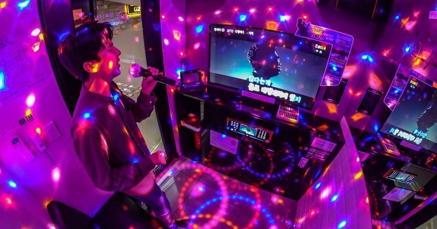
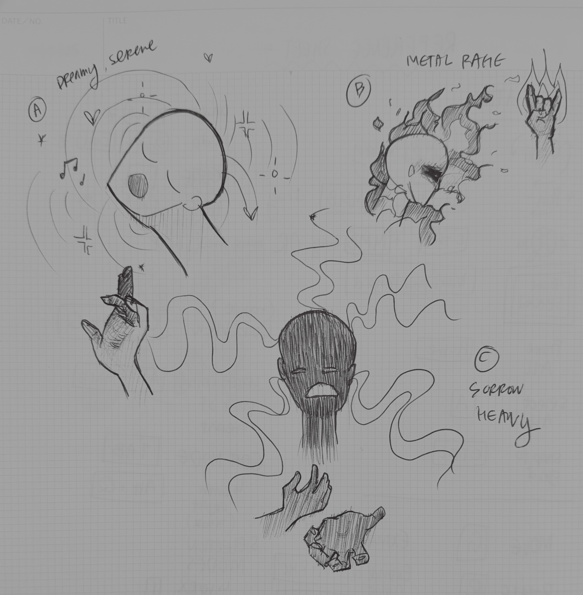
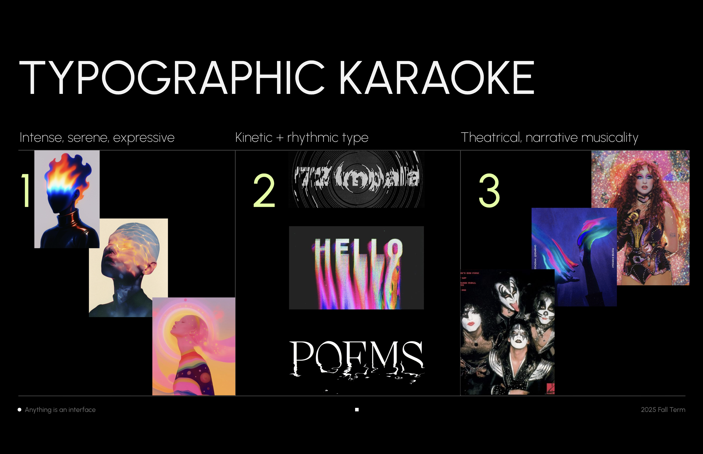

The Idea – Karaoke + Typography

I often find my husband blasting music and singing his favorite karaoke songs late into the night. Inspired by his love of karaoke, I wanted to experiment with an expressive performance-based interface combining typography & emotional intensity with a playful visual interaction.
Initial Prototype – Expressiveness + Testing Threshold
Before creating my "big idea," I experimented with a prototype to explore and learn the basic features of ML5's capabilities. I experimented with the FaceMesh model, specifically testing the mouth openness and smile width ranges, combining these 2 landmark ranges into a single "expressiveness" value (0–1). This drove the animated baseline and the behavior of the word "SING" on the canvas.
- Calm face = smoother line & minimal type movement
- Medium expression = subtle distortion appears
- High expression = noise tremors and baseline ripples dramatically
Next, I'll test the threshold for 3 expression values that'll show ideal interaction results for calm and extreme high/low expressions. I need to adjust the neutral "expressiveness" or add more facial landmarks, since a neutral face currently equals ~ 0.5 instead of 0. I also see if I can create a type of bounding box for the face coordinates so the z-axis depth doesn't overpower the x and y coordinates of the "expressivness" value. Then, I can create additional face and hand pose interactions from these baseline thresholds, and adjust accordingly.
UV Texture Maps + Hand Gesture Ideas

I plan to introduce at least 2 facial UV texture states based on expressiveness levels:
A) Dreamy & Serene: soft and calm, appears at low or neutral expressive values
B) Intense & Aggressive: vibrant, energetic, appears at expressive high peaks
C) Sad & Heavy: cold, low point (a nice-to-have, depending on how things go)
These masks act as expressive mood-changing skins. Additional hand gestures (via HandPose) would be a fun way to increase intensity or trigger typographic tremmors.
Moodboard & Visual Direction

Based on my intial idea and prototype, I created a moodboard inspired by karaoke lyric screens, expressive portraiture, face mask iconography, and kinetic typography. This will set the aesthetic tone and visual direction throughout my project.
Final Plan A, Plan B, Plan C
Plan A – Full Typographic Karaoke Mask System
- FaceMesh expressiveness drives typography + two UV textures
- 2 Hand gestures that add variation and special effects
- A stylized (and possibly karaoke-inspired) interface
Plan B – Medium Scope
- Keep expressiveness-driven type and baseline
- Replace UV mapping with simple graphic overlays over major facial landmarks (eyes, nose, cheeks, etc)
- One additional hand gesture control
Plan C – Minimal Version
- Face-only expressiveness control
- No gestures, no UV mapping
- Simple visual overlay changes for expressive highs/lows